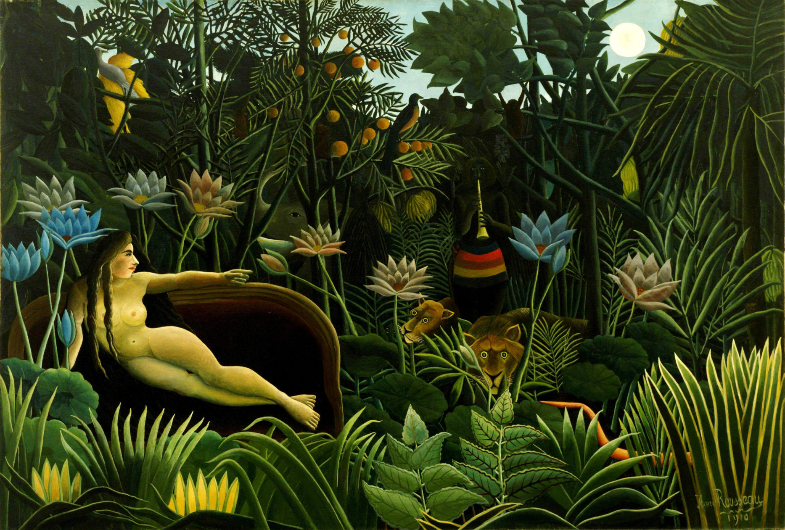

DJ Rikkert010 x piDJon: giftige cocktail of succesformule?
Eén keer het verkeerde deck op pauze. De issue tree legt uit waarom.
Lieve 14 fans,
Ik zou jullie ei-gen-lijk allemaal stuk voor stuk bij naam moeten noemen. Maar ja, de AVG.
Het wordt een lange tocht vol bijzondere en zeer krokante momenten. Naast elektronisch gefabriceerde tunes krijg je periodiek inspiratie op het snijvlak van kunst, (nacht)cultuur, mode en lifestyle.
DJ Rikkert010
Plaatjes
Terugblik · eerste gig DJ Rikkert010 x piDJon @ Café Soif
Zaterdag 15 augustus was het dan eindelijk zover. Met een bakfiets gevuld met controller en baby van Schiebroek naar Rotterdam West. Vijf DJ-lesjes op de teller en zelf thuis half jaar pielen dus toch wel spannend. Ik heb één keer het verkeerde deck op pauze gedrukt. Conclusie alsnog: unaniem belachelijk groot succes.

De banger van deze editie
GIØ · Sistem Error
Mening. Piano meets vlotte beat. Kan niet anders zeggen: banger.
⭐⭐⭐⭐
Stukje informatie. Voor wie GIØ niet kent: DJ en Producer uit het zonovergoten Italiaanse Sicilië. Het label en collectief dragen de typerende naam '240 KM/H', ver boven de maximale snelheid op de Nederlandse snelweg van 100 KM/H. Meer info en tracks vind je op zijn SoundCloud. De plaat zelf staat in de nieuwsbrief-playlist op Spotify.
Staatjes
Issue tree · welke voorwaarden moeten in place zijn om succesvol DJ te worden?
Een issue tree is zowel simpel als ontzettend krachtig. Bovenaan zet je wat je wil bereiken. Daaronder de voorwaarden die daarvoor moeten kloppen. Per voorwaarde werk je met een stoplicht: groen is op orde, rood blokkeert.
Wil je er meer over weten, lees dan Issue Trees: The Definitive Guide van Crafting Cases.
In mijn geval is het centrale issue natuurlijk techniek.
De truc is wat je ermee doet. Groen moet je met rust laten, hooguit wat onderhoud. Dus niet laten afleiden door side projects zoals een nieuwsbrief, een website vibecoden of je haar blonderen.
Dus wat heb ik gedaan en kan ik al wat
De aandacht die rood vraagt heb ik omgezet naar voltooien van de Pioneer DJ DDJ-FLX4 Beginner Course van We Are Crossfader, YouTube shorts scrollen van DJ Phil Harris, een aantal lessen bij deep house DJ en trainer Ximar volgen én vooral thuis beetje pielen.
Eindresultaat: ik kan (meestal) zonder al te grote ongelukken van track A naar B.
Zijstraatjes
Simpel schilderen met Le Douanier
Pas laat beginnen betekent niet automatisch dat groot succes uitblijft. Zie het verhaal van kunstschilder Henri Rousseau (1844 tot 1910). Rousseau was douaneambtenaar, vandaar de bijnaam, en begon pas serieus te schilderen toen hij met pensioen ging.

In het begin werd hij uitgelachen vanwege zijn ogenschijnlijk 'simpele' manier van schilderen. Later omarmden de wereldberoemde modernisten Picasso en Kandinsky diezelfde "childlike simplicity" als primitivisme (The Art Story).
Simpel schilderen blijkt toch niet zo eenvoudig. Net als simpel draaien overigens.
Napraatje
Wat heerlijk dat je tot hier bent gekomen. Hoop dat het doorploegen net zo leuk is als het maken ervan.
Tot sinas en de groente,
DJ Rikkert010